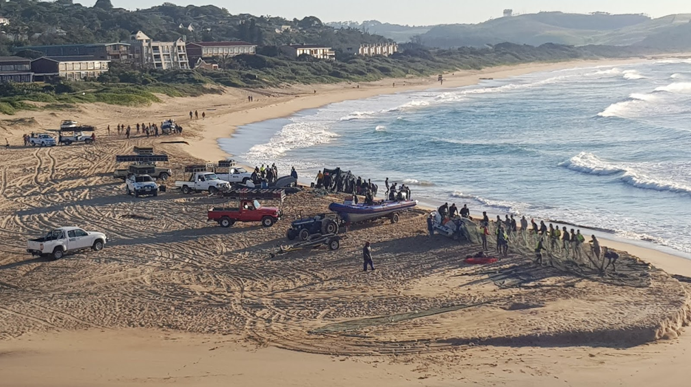

June – July
Annual
Public Event
Annual
The Sardine Run
The Sardine Run is one of the greatest wildlife spectacles on Earth — billions of sardines migrating northward along the KZN South Coast in a mass so vast it can be seen from space. The sardines are followed by thousands of common and bottlenose dolphins, bronze whaler and dusky sharks, Cape gannets diving from above, and occasionally humpback whales and Bryde's whales that intercept the baitballs from below. Coastal towns like Port Shepstone, Margate, Scottburgh, and Amanzimtoti become focal points for spectators and divers during peak events, with operators offering snorkel and dive experiences within active baitballs. No two Sardine Run seasons are identical in timing or intensity — but June is historically the most reliable window.
More Information